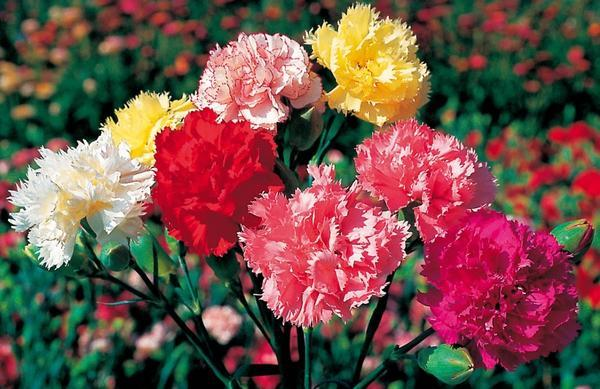

Гвозди́ка (лат. Diánthus) — род многолетних растений семейства Гвоздичные (Caryophyllaceae).
Травянистое дикорастущее и садовое растение с цветками разнообразной окраски. Многие виды и сорта гвоздики выращиваются на срезку и являются декоративными садовыми растениями. Регистрацией сортов гвоздики занимается Королевское садоводческое общество.
Многолетние травы и полукустарнички с линейными или линейно-ланцетовидными листьями. Цветки одиночные или по 2—3 на концах веточек. Чашечка цилиндрическая или цилиндрически-коническая, с многочисленными продольными жилками и (1)2—4(5) парами чешуевидных, черепитчато налегающих прицветников. Лепестков пять, с длинными ноготками и зубчатым, бахромчато рассечённым, изредка цельным отгибом. Тычинок десять. Столбиков два. Плод — цилиндрическая коробочка, сидячая или на коротком карпофоре, одногнёздная, раскрывающаяся четырьмя зубцами. Семена многочисленные, уплощённые, овальные, чёрного цвета, мелко-тупобугорчатые. Большинство видов рода легко гибридизируют между собой. Род известен всего более по красоте цветов, почему и распространен в садоводстве. Особенно известны многочисленные формы, вариации и помеси видов: D. Carthusianorum L. — Г. картгаузерская, D. barbatus L. — Г. бородатая, D. Caryophyllus L. — Г. гвоздичная, D. Japonicus Thnb. — Г. японская и др. Гвоздики светолюбивы, засухоустойчивы, в большинстве зимостойки.
Используются для срезки, посадки на клумбах, каменистых горках. В оранжереях и теплицах для срезки выращивают гвоздику ремонтантную оранжерейную, которую часто называют голландской. Некоторые виды гвоздик культивируются как летники и зацветают в год посева, а другие — как двулетники, то есть в год посева развивают только розеточные листья и цветут на второй год. В декоративном садоводстве в настоящее время используются многочисленные гибриды. Это растение было особенно популярно в Советском Союзе, где эти цветы стали символом Октябрьской революции, а впоследствии победы в Великой Отечественной войне. Некоторые исследователи утверждают, что запах гвоздики «помогает сгладить внутренние противоречия» и «стимулирует положительные эмоции». Употребляемые как пряность высушенные цветочные бутоны гвоздичного дерева (семейство миртовых) не имеют отношения к гвоздикам.
В изобразительном искусстве гвоздика, особенно красного цвета, является символом обручения. Популярно её изображение во фламандской портретной живописи XV—XVI веков, где это использование, вероятно, происходит от фламандского свадебного обряда. В религиозной живописи красные гвоздики символизируют кровь, Страсти Христовы (Распятие), или чистую любовь Девы Марии. Так, в этом смысле цветок фигурирует в картине «Мадонна с гвоздикой» кисти Леонардо да Винчи, намекая на то, что в будущем этого Младенца ждет Распятие. Существовала легенда, что там, где слезы Мадонны упали на подножие Голгофского креста, выросли гвоздички — таким образом, ставшие символом материнской любви и при этом Распятия. В своей монографии, посвященной месту цветка в культуре, исследователь Твигс Вэй пишет, что в этом смысле, как символ любви Марии, гвоздики появлялись на Западе в церквях на пасху, иногда помещенные под её изображениями. Отголоски этого обычая заметны в американском Дне Матери — празднике с активным использованием атрибутики гвоздики. Отсылка в названии к слову «гвоздь» встречается не только в русском языке, будучи также связанным с Распятием; в других европейских языках чаще встречается слово carnation, предположительно связываемое с Инкарнацией (Боговоплощением). В североевропейских церквях гвоздики были атрибутом праздника Пятидесятница — пятидесятого дня после Распятия. Символом брака, как считает исследователь, гвоздика стала через Деву Марию, Невесту Христову. Большое значение гвоздика имеет для исламского (персидского, османского и т. п.) искусства, где она является одним из важнейших орнаментальных мотивов. В восточном искусстве она встречается намного ранее: ведь именно с востока этот цветок проник в Европу в период Средних веков. В исламском раю четыре главных цветка: гвоздика (karanfil), роза, гиацинт и тюльпан. Гвоздика (красная, розовая или белая) является украшением нарядов оксфордских студентов, идущих на выпускной экзамен. Знаменитым стал выбор Оскаром Уайльдом гвоздики как фирменной бутоньерки. В новое время красная гвоздика была символом французских роялистов, затем в немецкоязычных странах — социалистических демократов (в особенности на Первомай), в то время, как белая гвоздика была символом христианских социалистов. Ассоциация красной гвоздики с социализмом позже распространилась на остальную Европу. Красная гвоздика приобрела популярный статус как символ Первомая на землях Габсбургов и в Италии примерно с 1900 года, когда её символизм был специально объяснен в брошюре из Флоренции, однако к Первой мировой войне она уступает розам. В русской культуре, как отмечают западные исследователи, «красные цветы, в особенности гвоздики, являются символом победы и патриотизма и имеют политические коннотации. Красные гвоздики можно дарить на юбилей, либо ветерану на День победы. В советское время ни один парад или политическая церемония не обходился без красных гвоздик». Западные исследователи цветов как культурного кода даже пишут, что красная гвоздика стала символом Советской России. Отмечают, что розе не удалось стать главным подарочным цветком в России: «рабочие дарят партийным функционерам гвоздики на 7 ноября и 1 мая». Красная гвоздика была символом государственного переворота в Лиссабоне 25 апреля 1974 года (Революция гвоздик).
Были сомненья ей дики — Полной огня и тревог… Помню — любила гвоздики Красный цветок. Каждый увидеть в собраньи С этим цветком её мог, В шутку ей дали названье «Красный цветок»… Раз непогодной порою Злобный постиг её рок: Был у нас вырван тюрьмою Красный цветок… Ссылки угрюмой и строгой Путь и суров и далёк… Тихо стал вянуть в дороге Красный цветок… Вьюгой овеянный снежной — Север далёкий жесток, — Снегом засыпан был нежный Красный цветок… 1913 автор: Алексей Иванович Маширов-Самобытник
Примечание: материал взят из Википедии